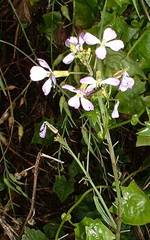
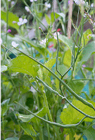
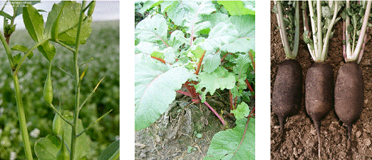
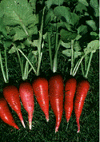
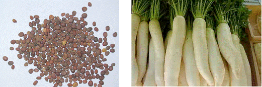
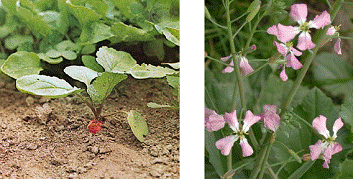

HORT 281 :: Lecture 28 :: ORIGIN, AREA, PRODUCTION, VARIETIES, PACKAGE OF PRACTICES FOR RADISH

Origin, area, production, varieties, package of practices for RADISH
(Raphanus sativus L.) (2n = 2x = 18)
(Hindi: Mooli) Family: Brassicaceae
Radish is grown for its tender tuberous roots which are eaten raw as salad or as cooked vegetable. It has a unique pungent flavour. It is also used in Parathas which are taken with curd for breakfast in north India. It has a cooling effect, prevents constipation and increases appetite and is more nutritious when cooked with leaves. Young leaves are also cooked as vegetable. It is recommended for patients suffering from piles, liver troubles, jaundice etc. Juice of fresh leaves is sued as diuretic and laxative. Radish is a good source of vitamin-C and minerals.
Rat-tail radish (R. sativus var. caudatus), which is similar to common radish, is grown for its long slender pods which are used as salad or cooked vegetable. It will not produce fleshy root as in radish.
Origin
Radish is originated in Europe and Asia. It is believed to have originated from Raphanus raphanistrum, which is widely distributed as a weed crop in Europe.
Botany
Radish is an annual or biennial depending on the ecotype / cultivar. The rosette leaves are lyrate, pinnatifid and vary in size from 10 cm to 15 cm in small rooted cultivars to 45 cm in large rooted cultivars. Edible portion develops from both the primary root and hypocotyls. Inflorescence is of racemose type with white flowers. Fruit is a siliqua. Seeds are yellowish when mature and turn reddish brown with age. Radish is cross-pollinated due to sporophytic self incompatibility. Pollination is by honey bees and flies. Stigma receptivity is maintained up to 4 days after anthesis. Selfing is by bud pollination. Flower buds are pollinated two days prior to opening of flower by collecting pollen grains of previously bagged flowers of the same plant.



Varieties
Radish varieties vary in shape, sized and skin colour of roots and duration of cop. The varieties can be divided into three groups – European or temperate types. Asiatic or tropical types and Indian types. Temperate types are of small size, with excellent quality and mainly used for salad purpose. Tropical types are more pungent than temperate types and have large roots. An indigenous type, Jaunpuri Giant, cultivated Jaunpur in Uttar Pradesh, has roots of 75-90 cm length, 50-60 cm girth and weight up to 5-15 kg.
A brief description of improved varieties is given below:
Asiatic varieties |
||
Pusa Deshi |
: |
Roots are pure white, pungent, 30-35 cm long, tapering with green stem end; suitable for sowing in middle of August to middle of October in North Indian Plains. |
Pusa Chetki |
: |
Suitable for sowing in hotter months, i.e., from March to August when no other variety is available in North Indian Plains; roots medium long, stumpy, pure white and medium pungent; duration 40-45 days. |
Pusa Reshmi |
: |
Roots mildly pungent, 30-35 cm long, white with green shoulder; duration 55-60 days. |
Japanese White |
: |
Developed at IARI Regional Station, Katrain by introduction; roots 20-30 cm long, cylindrical, mildly pungent and white with green shoulder; yield 15-30 t/ha in 60-65 days; suitable for sowing between October to December in plains and September in hills. |
Punjab Safed |
: |
Developed at PAU, Ludhiana; roots white, tapering, 30-40 cm long, mild in taste, free from forking. |
Punjab Pasand |
: |
Roots are long white and semi stumped. Suitable for sowing in October-November. |
Punjab Agethi |
: |
Developed at Punjab Agricultural University, Ludhiana; roots medium long, red skinned at top and white skinned at lower half, the most suitable for sowing from April to August. |
Kalyanpur No.-1 |
: |
Roots 22-23 cm long, white with green shoulder and tapering. |
Arka Nishant |
: |
Roots long, marble white with mild pungency; resistant to pithiness, premature bolting, root branching and forking. |
CO.1 |
: |
Roots milky white, 23 cm long and cylindrical; yield 9-10 t/ha in 45 days. |
European varieties : |
||
Pusa Himani |
: |
Developed at IARI Regional Station, Katrain; Roots white, 30-35 cm long, sweet flavoured; suitable for growing throughout the year except winter months in hills; yield 32 t/ha in 60-65 days. |
White Icicle |
: |
Developed at IARI Regional Station, Katrain; roots pure white, thin, icicle-shaped, straight and tapered; duration 30 days. |
Scarlet Globe |
: |
Roots bright red, round, small, flesh white, takes 25-30 days from sowing to harvest. |
Scarlet Long |
: |
Roots long, tapering with red skin and white flesh. |
Kashi Sweta |
: |
A selection made from Chetki population at IIVR, Varanasi; roots 25-30 cm long, straight and tapering with pointed tip; yield 45 t/ha in 30-35 days. |
Climate
Ideal temperature for growth and development of quality roots in radish is 10-15.5oC. Though it can tolerate high temperature, roots develop pungency under hot weather. Hence, it should be harvested when roots are small and tender during hot periods.
Soil
Being a root crop, radish requires loose and friable soil, rich in organic matter.
Land preparation and sowing
In plains of North India, radish can be grown throughout the year. Since temperate radish tolerates frost, it is successfully grown between September and January in plains. Tropical types are sown from middle of September onwards. If sowing is done later than November, it bolts earlier.
Land is ploughed to a fine tilth and ridges of 25 cm height and furrows are prepared at 30-45 cm distance. Seeds are sown continuously in ridges. Spacing depends on type of varieties. Indian tropical cultivars take longer time and grow larger. Distance between two rows is kept at 45 cm and seeds are sown continuously on ridges. Later they are thinned to keep a distance of 6-8 cm in a row. European types will be ready in 25-30 days and are sown at a closer spacing of 5-10 cm x 3 cm. Accordingly, seed rate varies from 10.0 kg for large varieties to 12.0 kg for temperate European types. For round cultivars, sow seeds on soil surface and put a layer of soil above it. Seeds of large cultivars are sown 1.5-3.0 cm deep. Usually seeds are sown in phased manner to get continuous supply of roots.
Hafeez and Hudson (1967) narrated beneficial effects of hardening radish seeds by subjecting them to 2 cycles of wetting and drying in which they are allowed to absorb water equivalent to 25% of weight and alter dried at 2.2oC.
Irrigation
Radish requires plenty of water from sowing to harvest. For rapid germination and subsequent production of roots, soil should be moist and loose. So irrigate immediately after sowing. If irrigation is restricted, roots will be tougher and pungent, making it unfit for marketing.
Inter-culture
In radish, the epicotyl’s grows up and develops into root tubers. As it grows in size, there is a tendency to bulge out. These roots are to be covered by way of one earthing up, which will take care of weeds also.
Harvesting
Depending up on the cultivar, roots will be ready for harvest in 25-55 days after sowing. If harvesting is delayed, roots will become bitter and pithy. Harvesting is done manually. A light irrigation is given before pulling out roots. After harvesting, roots are washed, made into bundles and marketed along with a few leaves.
Yield
European varieties yield 5-7 t/ha while in Indian cultivars, it varies from 15-20 t/ha. Radish roots can be stored for 2-3 days under room temperature without impairing quality. Roots can be stored for about 2 months at 0oC and 90-95% RH.
Seed production
Seeds of European varieties an produced in hills and tropical types in plains. As it belongs to family Cruciferae, it is cross-pollinated and pollination is done by bees. Hence, provide isolation distance as in cabbage or cauliflower. Wild mustard, wild turnip and wild radish should also be removed from field. Roots left in situ, without harvesting, produce maximum quantity of seeds. One additional earthing up is required during flowering and fruiting stages to prevent lodging of plants. For producing quality seeds, roots are pulled out and true-to-type roots alone are replanted. Usual practice is to remove ½ to ¾ of lower root portion before planting. However, it reduces yield considerably. Hence, replanting roots with minimum injury is advisable for high yield. Seed yield varies from 600-800 kg/ha.
Pests and diseases
A few of the important diseases of radish are Alternaria blight, white rust and radish mosaic.
Alternaria blight: It is caused by Alternaria rapham. Symptoms and control measures already discussed under Cole-crops.
White rust (Albugo candida): It produces white powdery substance in patches on under-surface of leaves. Disease symptoms appear on leaves and flowering shoots, which become deformed and produce malformed flowers. Use of resistant cultivars like Arka Nishant and regular sprayings with mancozeb (0.2-0.3%) are recommended.
Among pests, aphids, (Myzus persicae and Brevicoryne brassicae) are the most serious ones.
1. Chromosome number of radish is _____________
2. Radish mosaic virus is transmitted by _______________
3. The mode of pollination for radish is _____________
4. Arka Nishant, a variety of radish is resistant to ___________
5. Among the following _____________is a short duration root crop
a. Radish b. Elephant foot yam c. Beet root d. Tapioca
| Download this lecture as PDF here |